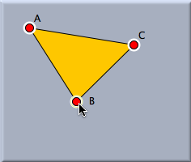
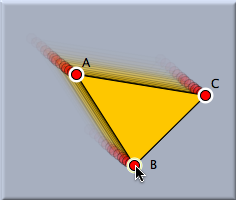

動かすモード

要素を動かす
普通は、図の中の点や直線などの要素を動かすために使います。 要素の上にマウスをもってきて左ボタンを押し、それをドラッグすれば望む場所へとその要素を移動させることができます。 ボタンを離すと新たな要素を動かすことができます。
シンデレラでは要素を可動要素と固定要素の2種類に分けて考えています。 名前が示すように、可動要素とは、図上で自由に動かすことのできる要素です。 固定要素とは、他の要素によって居場所が完全に決まっている要素のことです。 たとえば、ある点がすでにある2直線の交点として定義されていたとしたら、その点はもはや動かすことはできず、したがって固定要素に分類されます。 点について、それが可動要素か固定要素かは図上の色でわかります。 可動要素は明るい色で表示されているのです。
可動要素は次の6種類あります。
- 自由点: 他の要素とは独立している点を自由点と呼びます。 このような点は自由に動かすことができます。
- 直線上の点: ある直線上に加えられた点を示します。 この場合には、この点は直線の上だけを自由に動くことができます。
- 円周上の点: ある円周上に乗っている点を示します。 この場合には、この点はその円周上だけを自由に動くことができます。
- 傾きつき直線: ある点を通っていてそのほかに制限のない直線を傾きつき直線と呼びます。 この場合には、この直線を動かすことができますが、その点の周りに回転することになります。
- 半径つき円: ある点を中心としてそのほかに制限のない円を半径つき円といいます。 円周をドラッグすると、半径を変えることができます。 中心をドラッグすれば円全体を動かすことができます。
- 文字と数量: 文字と数量の表示も動かすモードでドラッグすることができます。 文字をドラッグすると好きな場所へと移動できます。 描画面の端のほうへと持っていくと、ちょうどよい場所に置かれるように自動調節されます。 また、文字を点に貼り付けることも可能です。 文字をドラッグして、点がハイライトしたところで離すと、以降、点の動きに従ってその文字も動きます。
「動かすモード」を使う理由はもう1つあります。 「動かすモード」ではラベルの場所を変えることもできます。 キーボードのシフトキーを押しながらラベルをドラッグすることにより、ラベルの場所を変えることができます。 といっても無制限に自由に変えられるわけではなく、点からほど近い場所の範囲で動かすことができるのです。 遠い場所へラベルと動かそうとしても、ある程度以上はいかないようになっています。
オブジェクトの選択
動かすモードは、１つ以上の要素をマウスで選択することにも使われます。要素が選択されると画面上でハイライトされるのですぐにわかります。 要素を選択する場面として次の3つが考えられます。
- 通常このモードは各要素の表示設定を個別に変更するために使います。選択された全ての要素に対して インスペクタ で表示設定を変更することができるようになります。たとえば、複数の直線を選択していて、サイズ変更のスライダーを動かすと、選択されていたすべての直線の太さが変わります。
- 選択された要素をまとめて 削除 することができます。
- 選択された要素は一斉に動かすことができます。
要素を選択するのには、マウスで要素をクリックしてもよいし、マウスのボタンを押したままドラッグして選択することもできます。 やり方によって次の３つの方法が可能になっています。
- 画面上の要素をマウスでクリックすると、ポインタがさわっている部分にあるその要素だけが選択され、その他は選択されません。
- シフトキーを押しながら要素をマウスでクリックすると、そのたびにこの要素の選択・非選択状態が交互に入れ換わります。ただし、これ以外の要素の選択状態は変わりません。したがって、この「シフトキーを押しながらクリック」でたくさんの要素を選択することができます。
- マウスボタンを押したままドラッグするとその領域内にあるすべての要素を選択できます。ただし、インスペクタの「全体の設定」メニューの「ドラッグで複数選択」がチェックされている必要があります。
ぜひそれぞれのやり方を試してみることを勧めます。
複数の要素を移動する
複数の要素を一度に移動させることができます。まず、動かしたい点（直線の場合は端点、円の場合は中心など）をシフトキーを押しながら選んでいきます。それから、どれか一つの点をドラッグすれば、選択されているすべての要素が一斉に移動します。 図形の形や動かす点どうしの位置関係は移動しても変わりません。
 |  |
||
| いくつか点を選んで・・・ | 移動する |
選択された複数の点は、複写/貼付をしたり、ユーザー定義の道具を作るといった使い方もできます。貼り付けをしたオブジェクトはその後も選択された状態になっています。貼り付けをすると、もとの場所から少し離れたところに置かれますが、それをそのまま移動することができるのです。
要約
ドラッグで移動します。クリックで選択されます。
See also
Page last modified on Saturday 03 of March, 2012 [05:25:52 UTC].
The original document is available at
http://doc.cinderella.de/tiki-index.php?page=Move%20ModeJ